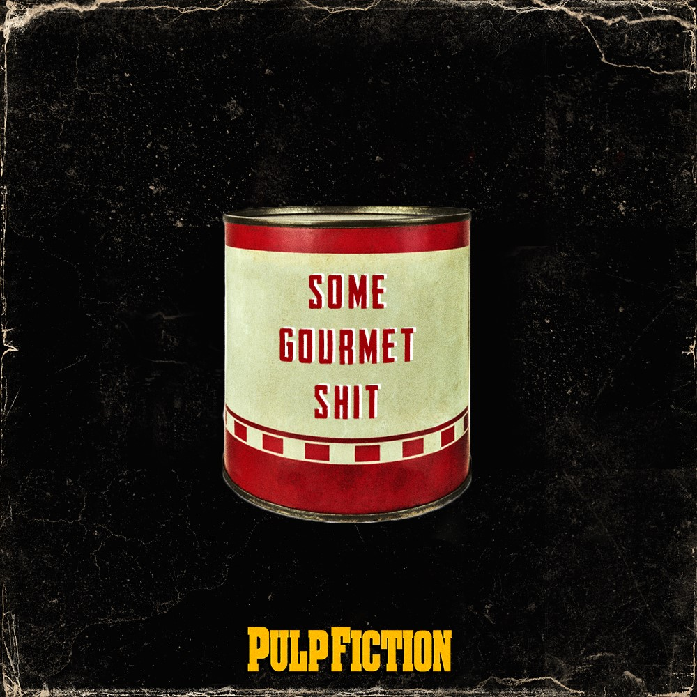
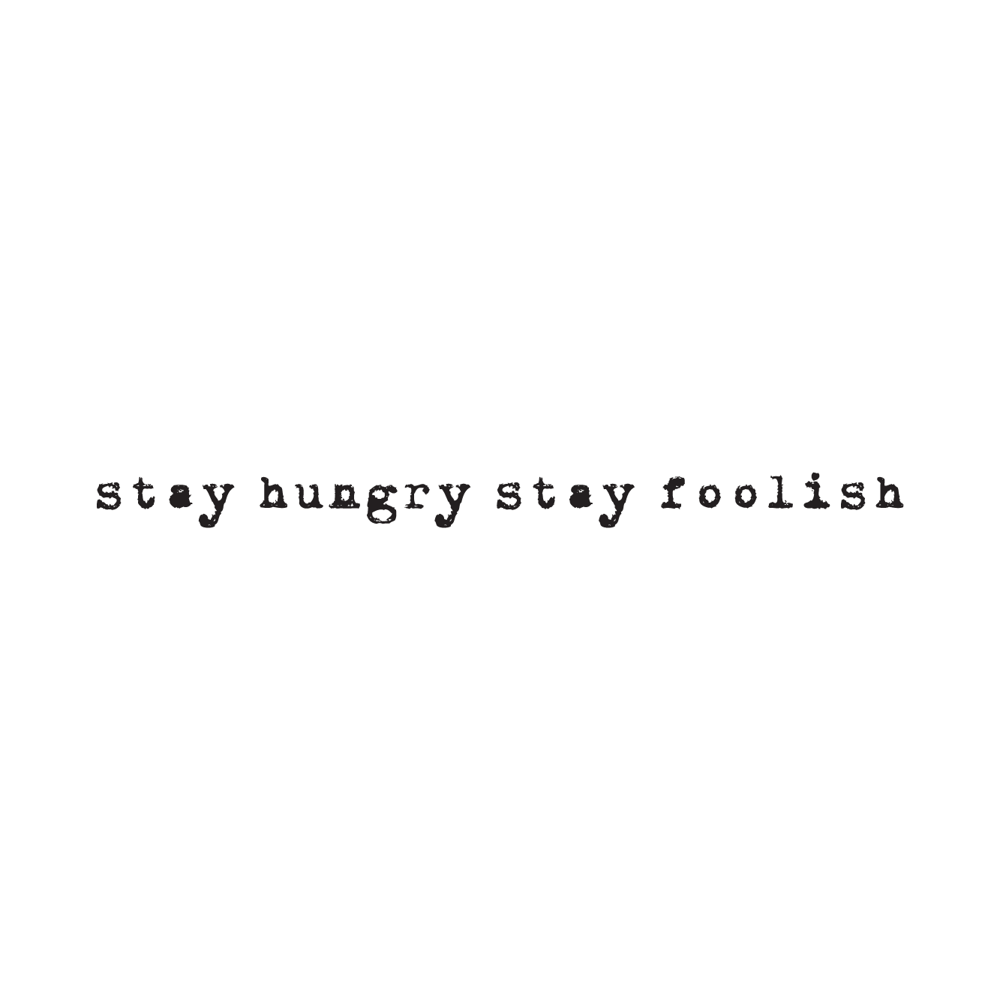
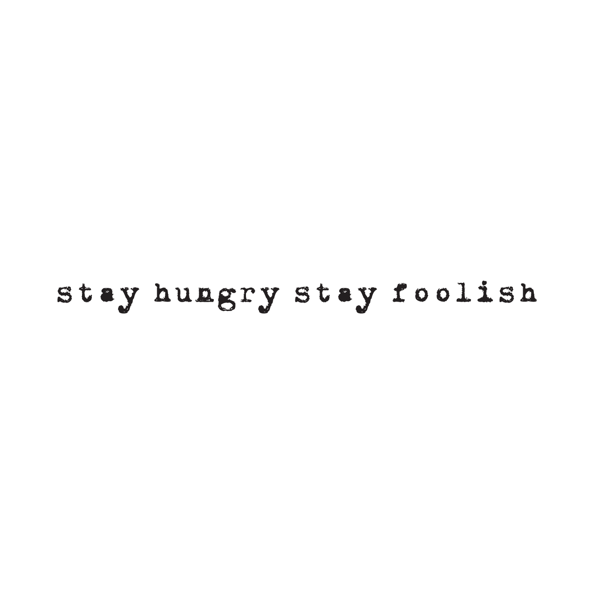
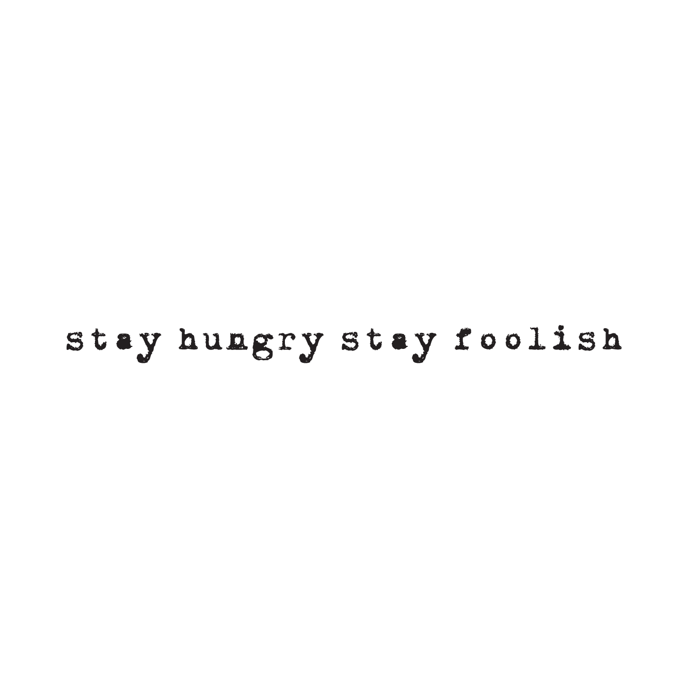

 

Our mission was to show how optogenetics can improve two areas of human life: architecture and regenerative medicine. Three light-induced technologies brought butterflies in our stomachs, so we set out to show everyone how that feels. All three work as light switches that control cellular processes non-invasively and with high spatiotemporal precision. We made standard Biobricks for these light-technologies and then combined them to explore how we could transform the places that we inhabit and how we think about obtaining new human organs.
One word characterises our approach towards developing new technologies: holistic. The three light induced technologies need to be described not only as biological parts and as Biobricks, but mainly as part of projects that can impact people’s lives. To show their full potential, we took on the challenge of combining these technologies into real life applications that we explored from many different angles: aesthetics, policy, engineering, entrepreneurship and public engagement.
